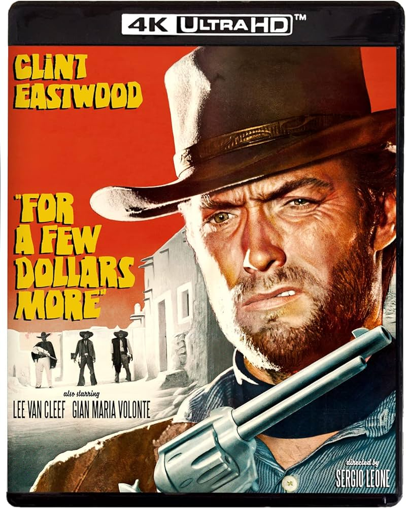
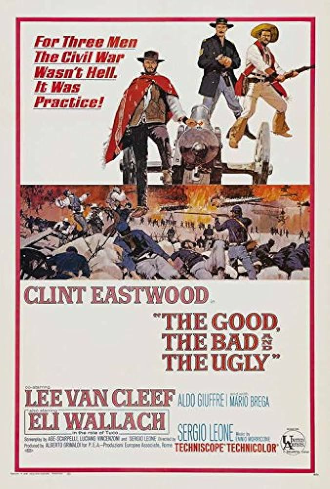

The Trilogy Consists of:

A Fistful of Dollars

For a Few Dollars More

Immerse yourself in the iconic world of Sergio Leone's Dollars Trilogy, a cinematic masterpiece that redefined the Western genre. Follow the gripping tales of "A Fistful of Dollars," "For a Few Dollars More," and "The Good, the Bad and the Ugly," where Clint Eastwood's enigmatic Man with No Name roams the rugged landscapes of the Old West. Experience the blend of unforgettable music, intense showdowns, and timeless storytelling that continues to captivate audiences around the globe.
Clint Eastwood's trademark squint was caused by the combination of the sun and high-wattage arc lamps on the set.
"A Fistful of Dollars" A Fistful of Dollars (Italian: Per un pugno di dollari) is a 1964 Italian-Spanish Spaghetti Western film directed by Sergio Leone and starring Clint Eastwood alongside Gian Maria Volontè, Marianne Koch, Wolfgang Lukschy, Sieghardt Rupp, José Calvo, Antonio Prieto, and Joseph Egger.
Released in Italy in 1964, then in the United States in 1967, initiating the popularity of the Spaghetti Western film genre. It was followed by For a Few Dollars More (1965) and The Good, the Bad and the Ugly (1966), also starring Eastwood. Collectively, the films are commonly known as the "Dollars Trilogy " or "The Man With No Name Trilogy". This film is an unofficial remake of the Akira Kurosawa film Yojimbo (1961), which itself drew inspiration from earlier Westerns. In the United States, the United Artists publicity campaign referred to Eastwood's character in all three films as the "Man with No Name".
As one of the first Spaghetti Westerns to be released in the United States, many of the European cast and crew took on American sounding stage names. These included Leone himself ("Bob Robertson"), Gian Maria Volonté ("Johnny Wels"), and composer Ennio Morricone ("Dan Savio").A Fistful of Dollars was shot in Spain, mostly near Hoyo de Manzanares, close to Madrid, but also (like its two sequels) in the Cabo de Gata-Níjar Natural Park in Almería province.
Where life had no value, death, sometimes, had its price. That is why the bounty killers appeared."
In the second installment of the Dollars Trilogy, Clint Eastwood returns as the iconic 'Man with No Name'. Teaming up with another bounty hunter, they take on a ruthless gang leader in a tale of revenge and justice.
After the surprising box-office success of A Fistful of Dollars (1964), Leone immediately made For a Few Dollars More, which many consider superior to the first. The sequel benefited from a stronger screenplay and an increased budget, which enabled Leone to cast Van Cleef opposite Eastwood; Van Cleef was a familiar character actor, but his role as a bounty hunter launched him to stardom. Eastwood’s character is referred to fleetingly as Monco, which is Spanish for “one-armed”—a reference to his always keeping his right hand on his gun. The last film in the Dollars series was The Good, the Bad, and the Ugly (1966), which is generally regarded as a masterpiece.
The Man with No Name (played by Eastwood) teams with another bounty hunter, Col. Douglas Mortimer (Lee Van Cleef), to infiltrate a gang of cutthroat thieves in order to steal their ill-gained fortune. Mortimer is motivated by personal reasons: he wants to avenge the rape and murder of his sister at the hands of the notorious bandit leader Indio (Gian Maria Volonté). In the climactic and prolonged showdown, Mortimer kills Indio, and he and the Man with No Name are the only survivors of the bloody battle.
This epic conclusion to the Dollars Trilogy follows the intersecting paths of three gunslingers searching for a hidden fortune during the American Civil War. Clint Eastwood, Lee Van Cleef, and Eli Wallach deliver iconic performances as the titular characters.
Italian western film, released in 1966, that was the third and arguably best installment in director Sergio Leone’s Dollars trilogy, which starred Clint Eastwood as the iconic Man with No Name. The movie is widely regarded as the definitive “spaghetti western.”
The film contains many of Leone trademarks, such as the sparse dialogue, long scenes that slowly build to a climax (for this film, in the form of a Mexican standoff) and contrasts between sweeping long camera shots and extremely tight closeups on eyes and fingers. The first ten minutes of the film have no dialogue.
Many see The Good, the Bad and the Ugly as a prequel to the earlier two movies—as Eastwood's character acquires his trademark clothes—most notably, the poncho—in the latter half of the movie. However, there is no solid continuity between the movies to deduce an absolute link or order. In Japan, it is the second installment of the Gunman in the Setting Sun Trilogy, following For a Few Dollars More and preceding Death Rides a Horse; like Clint Eastwood with the Dollars Trilogy, Lee Van Cleef is the only connecting thread of this trilogy.
The film was mostly filmed in Spain using 1,500 local militia members as extras for a cost of $1,600,000. It was released on December 23, 1966 in Italy and in the United States on December 29, 1967.Since the film's release, "the good, the bad, and the ugly" has become a common phrase (helped in part by Robert F. Kennedy's use of the phrase in campaign speeches). The Italian title translates as "The Good, the Ugly, the Bad."
Sergio Leone was an Italian film director, producer, and screenwriter, credited as the pioneer of the Spaghetti Western genre. He was born on January 3, 1929, in Rome, Italy, and his influential style has left an indelible mark on cinema history. Leone's films are known for their epic scope, stylized cinematography, and memorable music scores composed by Ennio Morricone.
Leone's "Dollars Trilogy," consisting of "A Fistful of Dollars," "For a Few Dollars More," and "The Good, The Bad and The Ugly," revolutionized the Western genre with its gritty realism, complex characters, and innovative storytelling techniques. Leone's work continues to inspire filmmakers and audiences around the world.